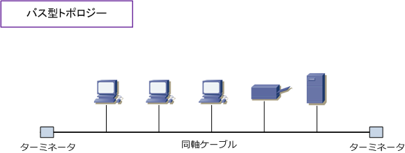
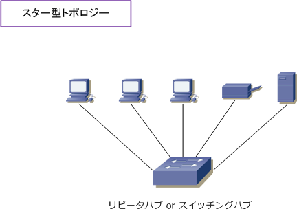
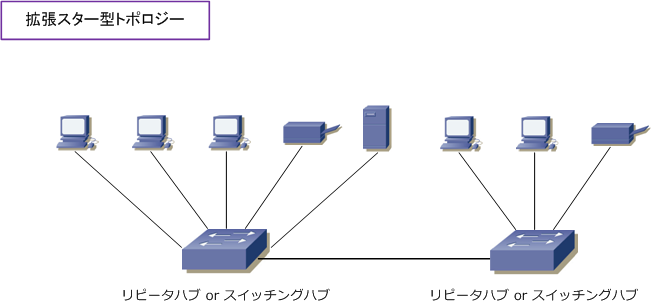
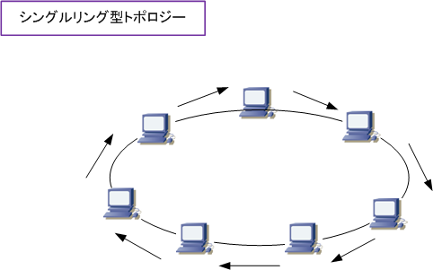
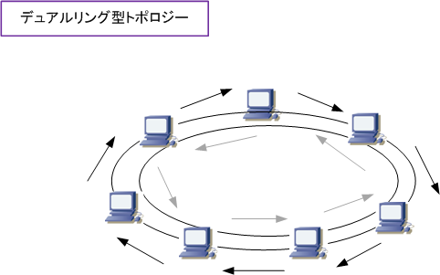
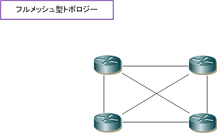
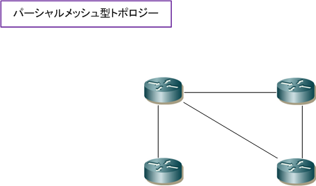

Network Topology
ネットワークトポロジーとは
ネットワークトポロジーとは、コンピュータネットワークの接続形態のことです。ネットワークにおいて PC、サーバ、スイッチ等の機器（ノード）がどのような形で接続するのかを表します。トポロジーには、 物理トポロジーと論理トポロジーがあります。物理トポロジーは、実際にLANケーブルやPCがどのように 接続するのかを示す物理的な構成のことです。論理トポロジーは、データの流れ方を表す論理的な構成の ことです。代表的なネットワークトポロジーにバス型、スター型、リング型、フルメッシュ型があります。
バス型トポロジー
バス型トポロジーは、1本のケーブル（同軸ケーブル）に複数のノードを接続しているトポロジーのこと。 一本の同軸ケーブルの両端にターミネータと呼ばれる抵抗器を取り付けて、終端での信号の反射、乱れを 防ぎます。バス型のトポロジーでは、中心となる同軸ケーブルに障害が発生するとそれに接続する全ての ノードが通信できなくなります。10Base2 / 10Base5など大昔のLAN規格で使用する物理トポロジーです。

スター型トポロジー
スター型トポロジーは1つの集線装置（ハブやスイッチ）に複数のノードを接続しているトポロジーのこと。 バス型トポロジーとは異なり、1本のケーブルに障害が発生した場合でも他のノード通信に影響は出ませんが、 集線装置に障害が発生すると全てのノードの通信に影響が発生します。今日のLANの主流のトポロジーです。

スター型トポロジーのハブに、さらに別のハブを接続するような構成は拡張スター型トポロジーと言います。

リング型トポロジー
バス型とスター型では物理トポロジーを紹介しましたが、リング型トポロジーといえばトークンリングLANに おける論理トポロジーが代表例なので、今回は論理トポロジーを紹介します。リング型トポロジーにおいては ノードは論理的にリング状に接続され、トークンと呼ばれるデータがリング状を高速に巡回しています。この トークンを得たノードがデータを送信する事ができます。シングルリング型トポロジーではどこか一箇所でも 障害が発生すると全体が通信できなくなります。リング型は、現在では見ることのない過去のトポロジーです。

シングルリング型の耐障害性を強めたトポロジーが、デュアルリング型トポロジーです。このトポロジーでは もう1つの予備のリングを設けることにより、プライマリリングに障害が発生した場合でも通信を継続できる 仕組みになっています。FDDI LANの論理トポロジーが代表例です。トークンリングLANと同様 FDDI LANは 現在ではほぼ使用されていないのでシングルリング、デュアルリングともに、見ることがないトポロジーです。

| IEEE | トークンパッシング採用のLAN | 使用するケーブル | 論理トポロジー | 物理トポロジー |
|---|---|---|---|---|
| 802.4 (解散） | トークンバス | 同軸ケーブル | リング型 | バス型 |
| 802.5 | トークンリング | STPケーブル & MSAU | リング型 | スター型 |
| - | FDDI | 光ファイバー & コンセントレータ | リング型 | スター型 |
※ トークンリング、FDDI の論理トポロジーはともにリング型です。なお、物理トポロジーはスター型となります。
フルメッシュ型トポロジー
バス型、スター型、リング型ではノードを中心に紹介してきましたが、フルメッシュ型やパーシャルメッシュ 型のトポロジーは、特にルータなどのネットワーク機器における物理または論理トポロジーが代表例ですので 今回はノードをルータに置き換えて解説します。フルメッシュ型の場合は、全てのルータと相互接続しており、 特定のルータとのリンクに障害が発生した場合でも、他のルータとのリンクを介して、継続して通信できます。

フルメッシュ構成は耐障害性に優れていますが、物理トポロジーでフルメッシュにするとコストがかかって しまいます。そこで、中心となるセンター側のルータや、一部のルータだけをメッシュ型にするパーシャル メッシュにすれば、コストを抑えられて、そしてある程度の冗長性と耐障害性を維持することができます。
